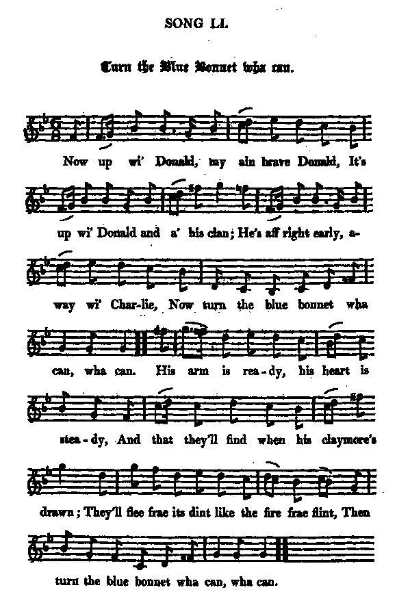

Turn the Blue Bonnet wha can
Touche au bonnet bleu qui l'ose
Lochiel's conversion - Le ralliement de Lochiel
Ascribed to James HoggTune - Mélodie
"Turn the Blue Bonnet wha can"
from Hogg's "Jacobite Relics" 2nd Series N°51, 1821
Sequenced by Christian Souchon

|
To the tune:
" Neither this beautiful air nor song have ever been before published . The name is ancient. I dare not take it on me to say so much for either the words or the music. But what need any one speak about an old song that is made about events that happened in our own day. My father was a man shearing on the harvest field that day the battle of Prestonpans was fought, and is yet living, and in good health and spirits, to tell of it. He remembers all the circumstances of the "Highlanders' Raide," as he calls it, with the utmost minuteness ; having been then in his seventeenth year. Yet he confesses that the time appears only like a few seasons. What then would he think on hearing us speak of an ancient song made at that period?" James Hogg in "Jacobite Relics", volume II, 1821 Nevertheless, in Gilbert Samuel McQuoid's opinion ("Jacobite Songs and Ballads", 1888), "the Ettrick Shepherd was doubtless the author of this" song. |
A propos de la mélodie:
" Ni ce chant ni cette mélodie magnifiques n'ont jamais encore été publiés . Le titre est ancien. Je n'en dirais pas autant des paroles ni de la musique. Mais pourquoi vouloir parler de chant ancien quand il traite d'évènements qui se sont déroulés de nos jours? Mon père était dans un champ, employé à la tonte des moutons, le jour de la bataille de Prestonpans et il est toujours là, en bonne santé et avec toute sa tête, pour en parler. Il se souvient de "l'expédition des Highlanders", comme il dit, dans les moindres détails. Il avait alors 17 ans. Pourtant il lui semble presque, me confie-t-il que c'était hier. Que penserait-il, s'il nous entendait traiter d' "anciens" les chants faits à cette époque?" James Hogg in "Jacobite Relics", volume II, 1821 Cependant, de l'avis de Gilbert S. McQuoid ("Jacobite Songs and Ballads", 1888), "il ne fait aucun doute que le Berger d'Ettrick est l'auteur de ce chant". |

|
TURN THE BLUE BONNET WHA CAN
1. Now up wi' Donald [1], my ain brave Donald, It's up wi' Donald and a' his clan; He's aff right early, away with Charlie Now turn the blue bonnet wha can, wha can. His arm is ready, his heart is steady And that they'll find when his claymore's drawn; They'll flee frae its dint like the fire frae flint, Then turn the Blue Bonnet wha can, wha can. 2. The tartan plaid it is waving wide, The pibroch's sounding up the glen, And I will tarry at Auchnacarry, [2] To see my Donald and a' his men. And there I saw the king o' them a', Was marching bonnily in the van; And aye the spell o' the bagpipe's yell Was, Turn the blue bonnet wha can, wha can. 3. There's some will fight for siller and gowd, And march to countries far awa; They'll pierce the waefu' stranger's heart, And never dream of honour or law. Gie me the plaid and the tartan trews, A plea that's just, a chief in the van, To blink wi' his e'e, and cry " On wi' me!" Deils, turn the blue bonnet wha can, wha can! 4. Hersel pe neiter slack nor slow, Nor fear te face of Southron loon; She ne'er pe stan' to fleech nor fawn, Nor parley at a' wi' hims plack tragoon. [3] She just be traw her trusty plade, Like pettermost Highland shentleman; And as she platterin town te prae, Tamn ! turn her plue ponnet fa can, fa can! [4] Source: "The Jacobite Relics of Scotland, being the Songs, Airs and Legends of the Adherents to the House of Stuart" collected by James Hogg, published in Edinburgh by William Blackwood in 1819. |
TOUCHE AU BONNET BLEU QUI L'OSE!
1. "Mon brave Donald, il faut te mettre en route [1] En route, Donald, ainsi que tout ton clan!" Donald suit Charlie: Le temps n'est plus au doute. Toucher à son bonnet est imprudent! Si son bras se fige, si son cœur transige, C'est ce qu'ils verront, s'il tire le claymore! Ils prendront la fuite, tels l'éclair, bien vite! Touche à son Bonnet Bleu qui l'ose encore! 2. Le plaid de tartan flotte dans la bourrasque. Les sons du pibroch montent le long du glen. C'est Achnacarry: Je veux y faire étape [2] Pour voir Donald au milieu de ses gens. J'ai vu là-bas celui qui sur eux tous règne A l'avant-garde il s'avançait fièrement. Les cornemuses clamaient leur cantilène: "Touche à mon bonnet qui l'ose vraiment!" 3. Certains qui pour l'or et l'argent se démènent, S'aventurent dans de lointaines contrées Ils percent le cœur dolent de l'indigène: L'honneur et le droit? Pourquoi s'en soucier? Si j'ai mon plaid, mes chausses de tiretaine, Une cause juste, ainsi qu'un chef vaillant Clignant les yeux qui crie: "Me suive qui m'aime!" Nul à mon bonnet ne touche, vraiment! 4. Quant à moi, je ne voudrais pas être en reste. Comme je fais face à l'Anglais, il faut voir! Et jamais je ne succombe à la faiblesse, Ni ne parlemente avec le Dragon Noir. [3] Tout aussi capable de manier la lame Que le plus hardi gentleman des Highlands, Qui, lorsque, agenouillé, je prie, de sa lame Oserait toucher mon bonnet, vraiment? [4] (Trad. Christian Souchon (c) 2010) |
|
|
|
|
[1] The
Chief Donald
referred to is Donald Ban, son of Donald Dubh Cameron, well-known by his nickname
"the Gentle Lochiel"
to whose unswerving adhesion to Charles Stuart the first verse alludes.
[2] Achnacarry , near Loch Arkaig, was the ancient seat of the chiefs of Clan Cameron. It was laid in ruins by the soldiery after Culloden (See Lochiel's lament... ). [3] Black Dragoons : a cavalry regiment in the British Army that was first raised in 1689 as Sir Albert Cunningham's Regiment of Dragoons. [4] "Her plue ponnet" = "my blue bonnet" : throughout this verse the bard imitates, I take it, improprieties peculiar to Gaelic speakers. (To pray, one takes off one's hat). See: "Lilliburlero" , "Turnimspike" , "Twa bonnie Maidens" , "Wad ye kenn" . |
[1] Le
Chef Donald
en question est Donald Ban, fils de Donald Dubh Cameron, connu par son surnom de
"Lochiel le Gentilhomme"
et dont l'inébranlable ralliement à Charles Stuart est évoqué dans cette première strophe.
[2] Achnacarry , près du Loch Arkaig, était l'ancien siège des chefs du Clan Cameron. Il fut détruit par la soldatesque après Culloden (Cf. Lochiel's lament... ). [3] Dragons Noirs : un régiment de cavalerie de l'armée britannique créé en 1689 sous le nom de Régiment de dragons de Sir Albert Cunningham. [4] Her plue ponnet : le texte anglais imite, je suppose, dans cette strophe les fautes de langage propres aux Highlanders habitués à parler le gaélique. (On enlève son bonnet pour prier). Voir: "Lilliburlero" , "Routes à péage" , "Les deux jolies filles" , "Savez-vous d'où je viens" . |
|
|
|